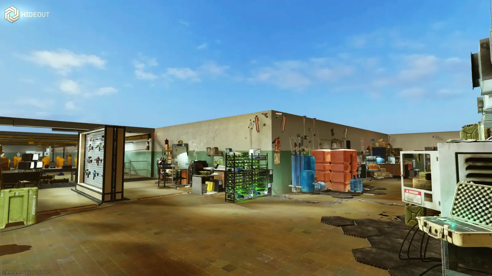
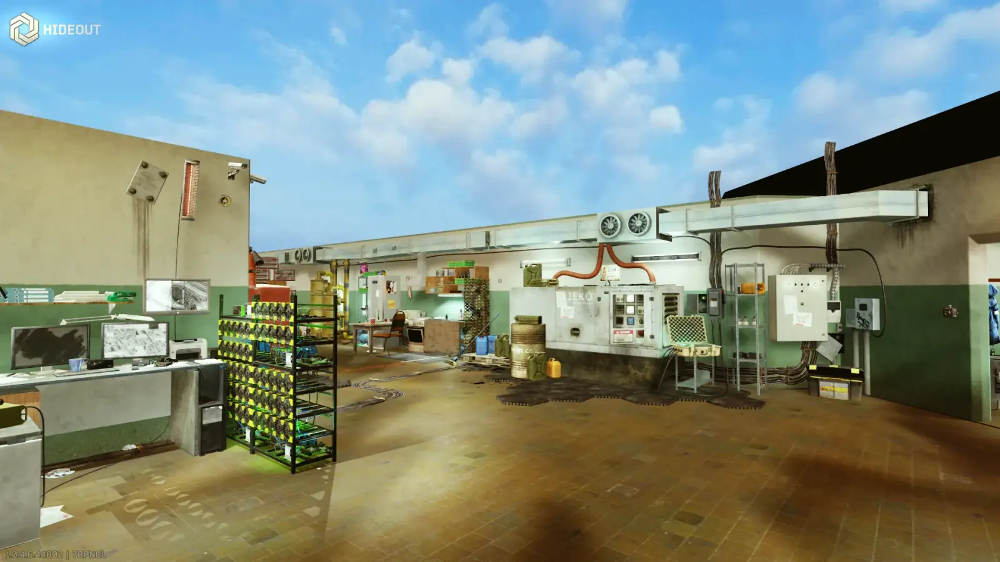
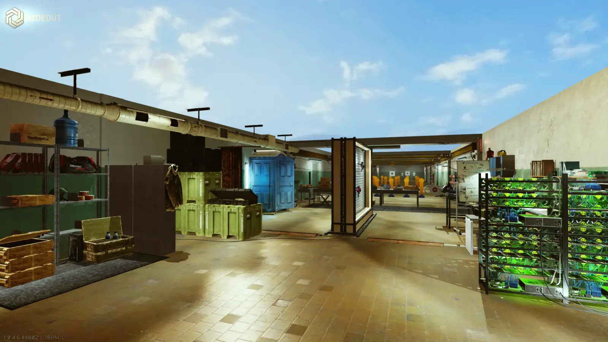

Mod
Hideout Sky
- Downloads
- 635
- Favourites
- 3
- Mod lists
- 4
Settings
Check F12 menu for sunlight and skybox settings
Images



Version
1.1.0
SPT 4.0.*
Fika: compatible
89 downloads1.6 MB
- More natural looking lighting
VirusTotal: report 1
Version
1.0.1
SPT 4.0.*
Fika: compatible
411 downloads1.6 MB
- Concealed stuff hanging from the ceiling (invisible lamps still produce light). Please report if I missed something
- Fixed skybox disappearing on hitting Tab
- Fixed sunlight shining on objects in main screen and inventory (can be optionally enabled back via “Sunlight/Is Enabled in menu”)
- Dont forget to backup your skybox cubemap if you use different one
VirusTotal: report 1
Version
1.0.0
SPT 4.0.*
Fika: compatible
135 downloads1.6 MB
Initial release
VirusTotal: report 1